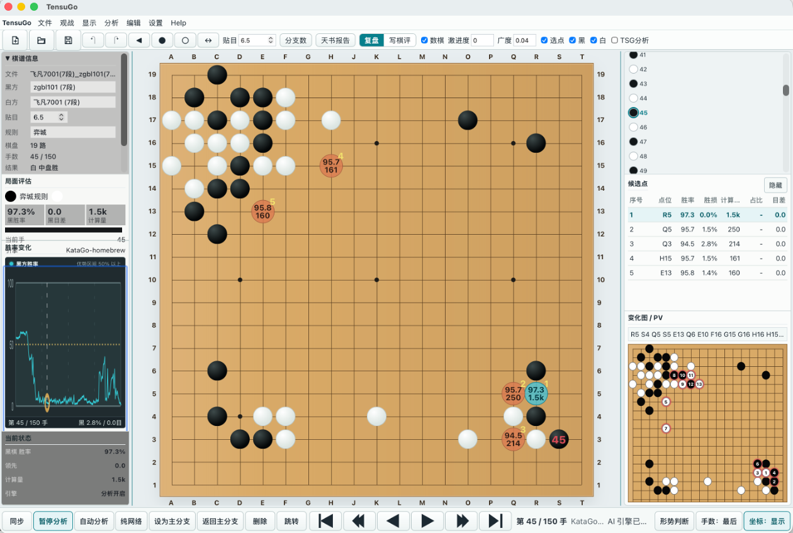

SGF と変化図
分岐を保ったまま棋譜を読み込み、主変化と研究用の変化を行き来できます。
囲碁のためのローカル AI レビュー環境
TensuGo は SGF を読み込み、ローカル KataGo の候補手・勝率・目差・変化図を表示し、研究ノートにまとめられるデスクトップアプリです。
Windows x64 には KataGo OpenCL エンジンが含まれます。macOS Apple Silicon では KataGo の別途インストールが必要です。
最新バージョン：TensuGo V0.7.50（更新日 2026-08-21）。 検討局面から問題を作成し、目標レベル別に解答・ランキングに対応。エンジンは通常/擬人デュアルモードとメモリ監視。研究文書は切り抜き・プレビュー・一括エクスポートが可能に。

機能
分岐を保ったまま棋譜を読み込み、主変化と研究用の変化を行き来できます。
棋譜をクラウドへ送らず、候補手、勝率、目差、訪問数、PV を確認できます。
局面図、候補手、コメントを読みやすいレビュー資料として保存できます。
デスクトップアプリの設定で English、簡体中文、日本語、한국어を切り替えられます。
ダウンロード
Windows x64 は内蔵 KataGo エンジン付き。macOS Apple Silicon 版は軽量で、KataGo を別途設定します。
最新リリース：V0.7.50・更新日 2026-08-21
内蔵 KataGo OpenCL エンジン。
Windows MSIbrew install katago の後、設定で Auto Detect を実行してください。